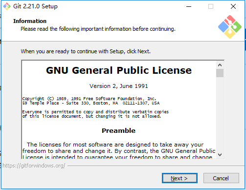
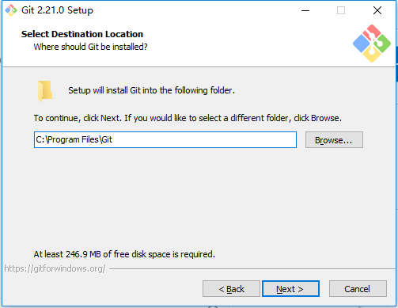
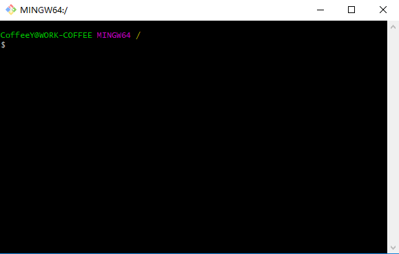
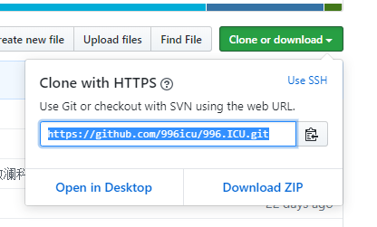
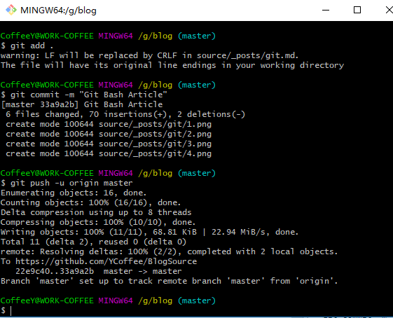

<!doctype html>
<html lang="zh-CN">
<head><meta name="generator" content="Hexo 3.8.0">
    <meta charset="UTF-8">
    <meta http-equiv="X-UA-Compatible" content="IE=11,IE=10,IE=9,IE=8">
    <meta name="baidu-site-verification" content="dIcXMeY8Ya">
    
    <title>Git Bash的简单使用记录 | CoffeeY Blog</title>
    <meta name="viewport" content="width=device-width, initial-scale=1, maximum-scale=1, user-scalable=0">
    <meta name="keywords" content="Java 后端 Vue">
    <meta name="description" content="Coffee个人记录博客">

    
    <link rel="alternative" href="/atom.xml" title="CoffeeY Blog" type="application/atom+xml">
    
    
    <link rel="shortcut icon" href="/favicon.ico">
    
    <link rel="stylesheet" href="/css/style.css">
    <!--[if lt IE 9]>
    <script src="/js/html5.js"></script>
    <![endif]-->
    
<script>
    var _hmt = _hmt || [];
    (function() {
        var hm = document.createElement("script");
        hm.src = "//hm.baidu.com/hm.js?fd459238242776d173cdc64918fb32f2";
        var s = document.getElementsByTagName("script")[0];
        s.parentNode.insertBefore(hm, s);
    })();
</script>


</head>
</html>
<body class="home">
    <!-- 博客头部 -->
    <header class="header">
    <section class="container header-main">
        <div class="logo">
            <a href="/">
                <div class="cover">
                    <span class="name">CoffeeY Blog</span>
                    <span class="description">JAVA VUE SQL LINUX</span>
                </div>
            </a>
        </div>
        <div class="dropnav icon-paragraph-justify" id="JELON__btnDropNav"></div>
        <ul class="menu hidden" id="JELON__menu">
            
            <li rel="/2019/05/22/git_bash/index.html" class="item ">
                <a href="/" title="首页" class="icon-home">&nbsp;首页</a>
            </li>
            
            <li rel="/2019/05/22/git_bash/index.html" class="item ">
                <a href="/code/" title="实验室" class="icon-lab">&nbsp;实验室</a>
            </li>
            
            <li rel="/2019/05/22/git_bash/index.html" class="item ">
                <a href="/about/" title="关于" class="icon-about">&nbsp;关于</a>
            </li>
            
            <li rel="/2019/05/22/git_bash/index.html" class="item ">
                <a href="/comment/" title="留言" class="icon-comment">&nbsp;留言</a>
            </li>
            
        </ul>
        <div class="profile clearfix">
            <div class="feeds fl">
                
                
                <p class="links">
                    
                        <a href="https://github.com/YCoffee" target="_blank">Github</a>
                        |
                    
                        <a href target="_blank">Reserved Link Location</a>
                        
                    
                </p>
                <p class="sns">
                    
                        <!-- <a href="" class="sinaweibo" target="_blank"><b>■</b> Reserved</a> -->
                        <a href="javascript: void(0);" class="sinaweibo" target="_blank"><b>■</b> Reserved</a>
                    
                        <!-- <a href="" class="qqweibo" target="_blank"><b>■</b> Reserved</a> -->
                        <a href="javascript: void(0);" class="qqweibo" target="_blank"><b>■</b> Reserved</a>
                    
                    <a href="javascript: void(0);" class="wechat">
                        <b>■</b>
                        Reserved
                        <span class="popover">
                            
                            <i class="arrow"></i>
                        </span>
                    </a>
                </p>
                
            </div>
            <div class="avatar fr">
                
            </div>
        </div>
    </section>
</header>


    <!-- 博客正文 -->
    <div class="container body clearfix">
        <section class="content">
            <div class="content-main widget">
                <!-- 文章页 -->
<!-- 文章 -->
<article class="post article">
    <header class="text-center">
        <h3 class="post-title"><span>Git Bash的简单使用记录</span></h3>
    </header>
    <p class="post-meta text-center">
        CoffeeY 发表于
        <time datetime="2019-05-22T08:41:57.000Z">2019-05-22</time>
    </p>
    <div class="post-content">
        <h2 id="Git简介"><a href="#Git简介" class="headerlink" title="Git简介"></a>Git简介</h2><p>git是一个分散式版本控制软件，最初由林纳斯·托瓦兹創作，於2005年以GPL釋出。最初目的是为更好地管理Linux核心开发而设计。应注意的是，这与GNU Interactive Tools（一个类似Norton Commander界面的文件管理器）有所不同。</p>
<p>git最初的开发动力来自于BitKeeper和Monotone。git最初只是作为一个可以被其他前端（比如Cogito或Stgit）包装的后端而开发的，但后来git内核已经成熟到可以独立地用作版本控制。很多著名的软件都使用git进行版本控制，其中包括Linux核心、X.Org服务器和OLPC内核等项目的开发流程。</p>
<h2 id="正题"><a href="#正题" class="headerlink" title="正题"></a>正题</h2><p>首先贴一段Wikipedia对git的说明，具体为何贴，先不管吧，进入正题。</p>
<p>正巧电脑最近也出问题而傻BB的使用了自带的修复导致所有磁盘都被格式化了（问题的解决其实可以扩容C盘？或者重装系统？），此贴就一并将Git的安装记录下来吧</p>
<p><a href="https://git-scm.com/downloads" title="Git官网下载地址" target="_blank" rel="noopener">Git官网下载地址</a></p>
<h3 id="Windows版本"><a href="#Windows版本" class="headerlink" title="Windows版本"></a>Windows版本</h3><h4 id="安装流程"><a href="#安装流程" class="headerlink" title="安装流程"></a>安装流程</h4><p><center></center></p>
<p><center></center></p>
<blockquote>
<p>此处尽量将安装路径修改至其他盘符</p>
</blockquote>
<p>…<br>…<br>…</p>
<p>之后的操作一直next就好了</p>
<h4 id="检查是否安装完成"><a href="#检查是否安装完成" class="headerlink" title="检查是否安装完成"></a>检查是否安装完成</h4><p>Win+R打开运行输入cmd，在命令提示符（cmd）里输入git --version有版本信息则已成功了</p>
<h3 id="Git-Bash的简单使用"><a href="#Git-Bash的简单使用" class="headerlink" title="Git Bash的简单使用"></a>Git Bash的简单使用</h3><h4 id="将项目代码上传至GitHub"><a href="#将项目代码上传至GitHub" class="headerlink" title="将项目代码上传至GitHub"></a>将项目代码上传至GitHub</h4><h5 id="1-安装路径下打开git-bash-exe"><a href="#1-安装路径下打开git-bash-exe" class="headerlink" title="1.安装路径下打开git-bash.exe"></a>1.安装路径下打开git-bash.exe</h5><p><center></center></p>
<h5 id="2-进入项目目录"><a href="#2-进入项目目录" class="headerlink" title="2.进入项目目录"></a>2.进入项目目录</h5><p>一、<br>在项目目录右击，菜单栏里点击Git Bash<br>二、<br><figure class="highlight plain"><table><tr><td class="gutter"><pre><span class="line">1</span><br><span class="line">2</span><br><span class="line">3</span><br></pre></td><td class="code"><pre><span class="line">cd Disk:/router/../folder</span><br><span class="line">//比如</span><br><span class="line">cd G:blog</span><br></pre></td></tr></table></figure></p>
<h5 id="3-执行初始化"><a href="#3-执行初始化" class="headerlink" title="3.执行初始化"></a>3.执行初始化</h5><figure class="highlight plain"><table><tr><td class="gutter"><pre><span class="line">1</span><br></pre></td><td class="code"><pre><span class="line">git init</span><br></pre></td></tr></table></figure>
<p>此时你会发现在项目目录下出现.git文件夹（若没有则查看下隐藏项目/文件夹是否显示）</p>
<h5 id="4-项目代码缓存如本地库"><a href="#4-项目代码缓存如本地库" class="headerlink" title="4.项目代码缓存如本地库"></a>4.项目代码缓存如本地库</h5><figure class="highlight plain"><table><tr><td class="gutter"><pre><span class="line">1</span><br></pre></td><td class="code"><pre><span class="line">git add .</span><br></pre></td></tr></table></figure>
<p>后面的.别忘记</p>
<h5 id="5-项目代码提交至本地库"><a href="#5-项目代码提交至本地库" class="headerlink" title="5.项目代码提交至本地库"></a>5.项目代码提交至本地库</h5><figure class="highlight plain"><table><tr><td class="gutter"><pre><span class="line">1</span><br></pre></td><td class="code"><pre><span class="line">git commit -m &quot;本次提交的信息&quot;</span><br></pre></td></tr></table></figure>
<h5 id="6-GitHub创建项目获取https-URL并做关联"><a href="#6-GitHub创建项目获取https-URL并做关联" class="headerlink" title="6.GitHub创建项目获取https URL并做关联"></a>6.GitHub创建项目获取https URL并做关联</h5><p><center></center><br><figure class="highlight plain"><table><tr><td class="gutter"><pre><span class="line">1</span><br></pre></td><td class="code"><pre><span class="line">git remote add origin https://github.com/996icu/996.ICU.git</span><br></pre></td></tr></table></figure></p>
<h5 id="7-上传本地项目代码至GitHub"><a href="#7-上传本地项目代码至GitHub" class="headerlink" title="7.上传本地项目代码至GitHub"></a>7.上传本地项目代码至GitHub</h5><p>若首次上传请先pull<br><figure class="highlight plain"><table><tr><td class="gutter"><pre><span class="line">1</span><br><span class="line">2</span><br><span class="line">3</span><br></pre></td><td class="code"><pre><span class="line">git pull master --allow-unrelated-histories</span><br><span class="line"></span><br><span class="line">个别版本git 2.9以后需要增加这个【--allow-unrelated-histories】</span><br></pre></td></tr></table></figure></p>
<p>上传本地项目代码<br><figure class="highlight plain"><table><tr><td class="gutter"><pre><span class="line">1</span><br></pre></td><td class="code"><pre><span class="line">git push -u origin master</span><br></pre></td></tr></table></figure></p>
<p><center></center></p>
<h4 id="Github项目查看是否上传成功"><a href="#Github项目查看是否上传成功" class="headerlink" title="Github项目查看是否上传成功"></a>Github项目查看是否上传成功</h4>
    </div>
    <p class="post-meta">
        <span class="post-cat">分类：
            <a class="cat-link" href="/categories/front-end/">前端</a>
        </span>
        <span class="post-tags">
            标签：
            
    
        <a href="/tags/Git-Bash/" title="Git Bash">Git Bash</a>
    

        </span>
    </p>
</article>
<!-- 分享按钮 -->

  <div class="article-share clearfix text-center">
    <div class="share-area">
      <span class="share-txt">分享到：</span>
      <a href="javascript: window.open('http://service.weibo.com/share/share.php?url=' + encodeURIComponent(location.href) + '&title=' + document.title + '&language=zh_cn');" class="share-icon weibo"></a>
      <a href="javascript: alert('请复制链接到微信并发送');" class="share-icon wechat"></a>
      <a href="javascript: window.open('http://sns.qzone.qq.com/cgi-bin/qzshare/cgi_qzshare_onekey?url=' + encodeURIComponent(location.href) + '&title=' + document.title);" class="share-icon qqzone"></a>
      <a href="javascript: window.open('http://connect.qq.com/widget/shareqq/index.html?url=' + encodeURIComponent(location.href) + '&desc=CoffeeY个人博客&title=' + document.title + '&callback=' + encodeURIComponent(location.href));" class="share-icon qq"></a>
      <a href="javascript: window.open('http://shuo.douban.com/!service/share?href=' + encodeURIComponent(location.href) + '&name=' + document.title + '&text=' + document.title);" class="share-icon douban"></a>
    </div>
  </div>


<!-- 上一篇/下一篇 -->

<div class="article-nav clearfix">
    
    <span class="prev fl">
        上一篇<br>
        <a href="/2019/05/23/npm/">
            
                NPM修改全局安装路径和缓存
            
        </a>
    </span>
    

    
    <span class="next fr">
        下一篇<br>
        <a href="/2019/05/22/hello-world/">
            
                Hello World
            
        </a>
    </span>
    
</div>

<!-- 文章评论 -->

  <script src="/js/comment.js"></script>
  <div id="comments" class="comment">
    <!--
    <div class="sign-bar">
      GitHub 已登录!
      <span class="sign-link">登出</span>
    </div>
    <section class="box">
      <div class="com-avatar"></div>
      <div class="com-text">
        <div class="main">
          <textarea class="text-area-edited show" placeholder="欢迎评论！"></textarea>
          <div class="text-area-preview"></div>
        </div>
        <div class="switch">
          <div class="switch-item on">编辑</div>
          <div class="switch-item">预览</div>
        </div>
        <div class="button">提交</div>
      </div>
    </section>
    <section class="tips">注：评论支持 markdown 语法！</section>
    <section class="list-wrap">
      <ul class="list">
        <li>
          <div class="user-avatar">
            <a href="/">
              
            </a>
          </div>
          <div class="user-comment">
            <div class="user-comment-header">
              <span class="post-name">张德龙</span>
              <span class="post-time">2017年12月12日</span>
              <span class="like liked">已赞</span>
              <span class="like-num">2</span>
            </div>
            <div class="user-comment-body">333333</div>
          </div>
        </li>
        <li>
          <div class="user-avatar">
            <a href="/">
              
            </a>
          </div>
          <div class="user-comment">
            <div class="user-comment-header">
              <span class="post-name">刘德华</span>
              <span class="post-time">2017年12月12日</span>
              <span class="like">点赞</span>
              <span class="like-num">2</span>
            </div>
            <div class="user-comment-body">vvvvv</div>
          </div>
        </li>
      </ul>
      <div class="page-nav">
        <a href="javascript: void(0);" class="item">1</a>
        <a href="javascript: void(0);" class="item">2</a>
        <a href="javascript: void(0);" class="item current">3</a>
      </div>
    </section>
    -->
  </div>
  <script>
  JELON.Comment({
    container: 'comments',
    label: 'git_bash' || '2019/05/22/git_bash/',
    owner: 'YCoffee',
    repo: 'blog_comments',
    clientId: '91c0a871a0d6570012db',
    clientSecret: 'b16559cda969a4e582e9c9254124202c27ff2e98'
  });
  </script>


            </div>
        </section>
        <!-- 侧栏部分 -->
<aside class="sidebar">
    <section class="widget">
        <h3 class="widget-hd"><strong>文章分类</strong></h3>
        <!-- 文章分类 -->
<ul class="widget-bd">
    
    <li>
        <a href="/categories/other/">其他</a>
        <span class="badge">(3)</span>
    </li>
    
    <li>
        <a href="/categories/front-end/">前端</a>
        <span class="badge">(3)</span>
    </li>
    
</ul>
    </section>

    
    <section class="widget">
        <h3 class="widget-hd"><strong>热门标签</strong></h3>
        <!-- 文章标签 -->
<div class="widget-bd tag-wrap">
  
    <a class="tag-item" href="/tags/hexo/" title="hexo">hexo (1)</a>
  
    <a class="tag-item" href="/tags/blog/" title="blog">blog (1)</a>
  
    <a class="tag-item" href="/tags/es5-6/" title="es5/6">es5/6 (1)</a>
  
    <a class="tag-item" href="/tags/Git-Bash/" title="Git Bash">Git Bash (1)</a>
  
    <a class="tag-item" href="/tags/windows文件夹共享/" title="windows文件夹共享">windows文件夹共享 (1)</a>
  
    <a class="tag-item" href="/tags/软件工具/" title="软件工具">软件工具 (1)</a>
  
    <a class="tag-item" href="/tags/NPM/" title="NPM">NPM (1)</a>
  
</div>
    </section>
    

    

    
    <!-- 友情链接 -->
    <section class="widget">
        <h3 class="widget-hd"><strong>友情链接</strong></h3>
        <!-- 文章分类 -->
<ul class="widget-bd">
    
        <li>
            <a href="https://www.baidu.com" target="_blank" title="百度搜索">百度</a>
        </li>
    
</ul>
    </section>
    
</aside>
<!-- / 侧栏部分 -->
    </div>

    <!-- 博客底部 -->
    <footer class="footer">
    &copy;
    
        2018-2019
    

    <a href="/">Ycoffee</a>
    <a> PowerBy</a>
    <a href="https://github.com/hexojs/hexo" target="_blank">HEXO</a>
    <a> ThemeBy</a>
    <a href="https://github.com/jangdelong/hexo-theme-xups" target="_blank">XUPS</a>
</footer>
<div class="back-to-top" id="JELON__backToTop" title="返回顶部">返回顶部</div>

    <!--博客js脚本 -->
    <!-- 这里放网站js脚本 -->
<script src="/js/main.js"></script>
</body>
</html>